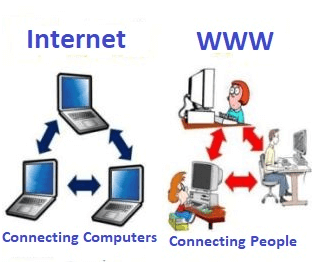

what is WWW?
World Wide Web, which is also known as a Web, is a collection of websites or web pages stored in web servers and connected to local computers through the internet. These websites contain text pages, digital images, audios, videos, etc. Users can access the content of these sites from any part of the world over the internet using their devices such as computers, laptops, cell phones, etc. The WWW, along with internet, enables the retrieval and display of text and media to your device.

The building blocks of the Web are web pages which are formatted in HTML and connected by links called "hypertext" or hyperlinks and accessed by HTTP. These links are electronic connections that link related pieces of information so that users can access the desired information quickly. Hypertext offers the advantage to select a word or phrase from text and thus to access other pages that provide additional information related to that word or phrase.
Difference between World Wide Web and Internet:
Some people use the terms 'internet' and 'World Wide Web' interchangeably. They think they are the same thing, but it is not so. Internet is entirely different from WWW. It is a worldwide network of devices like computers, laptops, tablets, etc. It enables users to send emails to other users and chat with them online. For example, when you send an email or chatting with someone online, you are using the internet.
History of the World Wide Web:
The World Wide Web was invented by a British scientist, Tim Berners-Lee in 1989. He was working at CERN at that time. Originally, it was developed by him to fulfill the need of automated information sharing between scientists across the world, so that they could easily share the data and results of their experiments and studies with each other.
The World Wide Web was invented by a British scientist, Tim Berners-Lee in 1989. He was working at CERN at that time. Originally, it was developed by him to fulfill the need of automated information sharing between scientists across the world, so that they could easily share the data and results of their experiments and studies with each other.